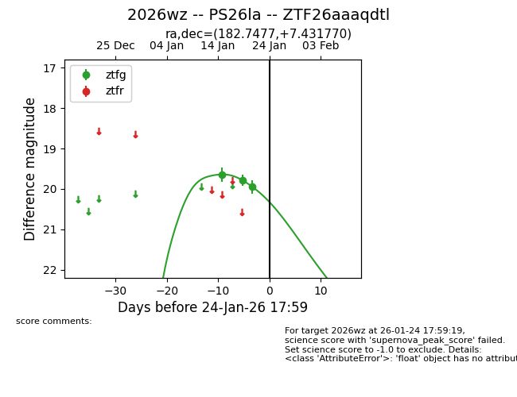
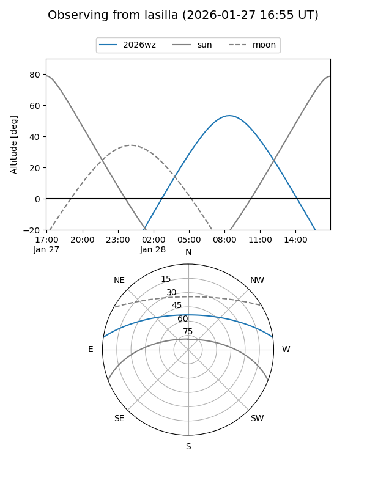
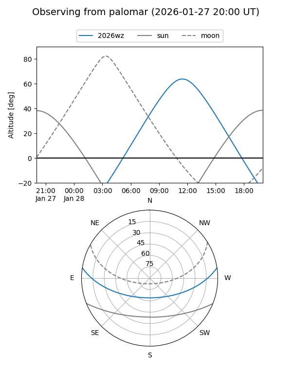
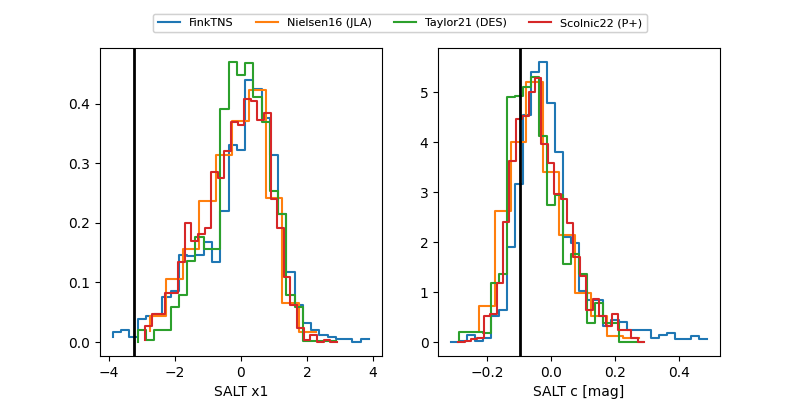

2026wz
Target 2026wz at 2026-01-25 10:31
Aliases and brokers:
FINK: link
Lasair: link
ALeRCE: link
TNS: link
YSE: link
alt names
ZTF26aaaqdtl (ztf,fink_ztf)
2026wz (tns,yse)
PS26la (panstarrs)
Coordinates:
equatorial (ra, dec) = 182.7477,+7.43177
equatorial (HMS+DMS) = 12:10:59.45,+07:25:54.37
galactic (l, b) = (275.1187,+68.09186)
Flags:
Photometry:
last ztfg=19.95
3 ztfg detections
Lightcurve

Visibility


Additional plots
